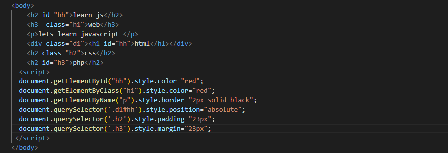
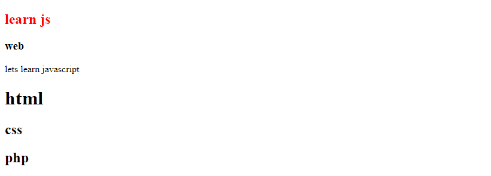

المهارات الاساسية و لغات البرمجة التي يجب ان تتعلمها لتصميم المواقع
*لغة HTML 5
HTML 5 (Hypertext Markup Language 5 ) : لغة تستخدم لانجاز و تصميم المواقع تم ابتكارها سنة 1991 من طرف العالم Tim Berners-lee .تستخدم لكتابة ا لنصوص و التعاليق و المقالات و رسم البيانات و الجداول . رفع الملفات كالصور و الفيديوهات و الاغاني و باقي الملفات الصوتي .انشاء استمارات لملا البيانات و كدلك انشاء قائمة وصفية مرتبة او غير مرتبةوانشاء روابط بين صفحات المواقع و غيرها من الميزات و الخصائص التي تتميز بها html .
البنية الاساسية للغة HTML 5 :
الاوسمة و الاكواد التي يجب تعلمها في لغة HTML :
- كتابة الفقرات : لكتابة فقرة معينة نستعمل الوسم <p></p>

بناء الجدول :
لانشاء جدول كيفما كان شكله نستخدم الوسم <table></table>
و لكتابة عنوان لجدولك يمكنك ان تستخدم الوسم <caption></caption> .
لتقسيم الجدول نستعمل الاوسمة التالية : وسم <thead> </thead>يستعمل للكتابة في راس الجدول و .
وسم <tbody> </tbody> يستعمل للكتابة في وسط الجدول . وسم <tfoot> </tfoot>يستعمل للكتابة في السطر الاخير من الجدول .

اوسمة meta :
</"meta charset = "utf-8> لتاكيد ان الصفحة مكتوبة بلغة html .
</"اسم الكاتب"=meta name = "author" content>تحديد اسم كاتب الصفحة .
</"2023"=meta name ="copyright" content> تحديد زمن كتابة الصفحة .
</"كتابة وصف الصفحة "=meta name="description" content> تحديد وصف لصفحة الموقع .
انشاء قائمة :
-لانشاء قائمة مرتبة نستعمل الوسم <ol></ol> و ol تعني order list مثلا :

-لانشاء قائمة غير مرتبة نستخدم الوسم <ul></ul> و ul تعني unorder list :
لانشاء قائمة وصفية نستخدم الوسم <dl> </dl> و dl تعني description list :
بعض الاوسمة التي تستخدم في نص او فقرة :
<b></b> لتكبير خط النص
<small></small> لتصغير خط النص
<u></u> وضع خط تحت النص
<sup></sup>تستعمل في التعبير الرياضي و يمثل الاس مثلا :< x <sup> 2 </sup
<sub> </sub> تستعمل لكتابة نص يعبر عن نص اخر مثلا : < x <sub> </sub
<code></code> تستخدم لكتابة كود لغة كلغة c
<address></address> تستخدم لكتابة عنوان الكتروني
<del></del>وضع خط على الكلمة
<abbr></abbr>وضع نقط تحت الكلمة
<blockquote></blockquote> يترك مكانا فارغا بين الكلماتالعناوين :
لكتابة العناوين في الموقع نستعمل الاوسمة التالية :
<h1> </h1> ,<h2> </h2> ,<h3> </h3> ,<h4> </h4> ,<h5> </h5> , <h6> </h6> . تتناقص حجم العناوين من h1 الى h6 مثلا :

الصورة :
لرفع الصورة من ملفاتك الشخصية و وضعها في صفحة الموقع نستعمل الوسم
< /'اسم الصورة'=img src > لمعرفة المزيد انظر الكود اسفله :

الصوت :
لاستدعاء ملف صوتي نستعمل الوسم :

الفيديو :
لرفع الفيديوهات من الملفات و وضعها على الموقع نستعمل الوسم :

-
الروابط :
لانشاء رابط بين صفحات الموقع او التوجه الى رابط اخر نستعمل الوسم الظاهر في الكود اسفله :
الاوسمة التي تاخد سطرا جديدا :
هناك اوسمة تعود الى السطر من تلقاء نفسها و تسمى block elements. مثلا (div, video, nav, table, hr, ol, ul, i, (h1-h6), p).الاوسمة التي لا تاخد سطرا جديدا :
هناك نوع اخر من الاوسمة لا تقوم بالعودة الى السطر تلقائيا.و منها (a, b, button, input, span, label, sub, sup, small, img, strong)التعاليق :
لكتابة التعاليق في صفحة html داخل محرر الاكواد نستخدم <-- --!>.
لكتابة تعليق حول مقالة او صورة نستعمل الكود الظاهر اسفله :
-
انشاء استمارة :
لانشاء استمارة نستخدم الوسم التالي :
لانشاء زر الارسال نستعمل
لانشاء زر لمسح البيانات و لاعادة كتابتها نستعمل
لمعرفة باقي الاوسمة المستعملة لانشاء استمارة انظر المثال اسفله

انشاء زر على شكل صورة يقوم بارسال بيانات المستخدم
انشاء قائمة الاختيارات
لتقسيم الموقع نحتاج الى الاوسمة التالية :
<header> </header> يمثل راس الموقع .
<nav></nav>يستخدم لانشاء راس الموقع .
<aside></aside>يمثل جانب الموقع .
<section></section>يستخدم لكتابة موضوع الموقع.
<article></article>يستخدم لكتابة المقالات في الموقع .
<footer></footer>يمثل الجزء الاخير للصفحة .
للتعرف على المزيد من الاوسمة قم بتحميل الملف اسفله :
HTML
*لغة CSS
CSS (cascading style sheets) :لغة تستخدم لتدبير مظهر الموقع ( الموضع و الالوان و الخلفية وتحديد حجم الخط ...) و تزيينه . تم ابتكارها سنة 1996 من طرف العالم Tim-Beners lee .
كيف انشء ملف css ؟
لانشاء ملف css داخل ملف html نستخدم الوسم 
او نستخدمه داخل الوسم مثلا <";p style="color:red>
لانشاء ملف css خارجي نستخدم الكود الظاهر اسفله 
لربط هدا الملف بملف html نستخدم 
بعض الاكواد الاساسية للغة css
كواد خاصة بالنصوص :
; :font-family تحديد نوع الخط
; :font-style تحديد شكل النص
; : font-weight تحديد حجم الخط
اكواد خاصة بالاطارات :
;border-width:2px تحديد سمك الاطار
;border-style:solid تحديد شكل الاطار
;border-color :red تحديد لون الاطار .
; border-radius:2px 2px 2px 2px انشاء اطار مستدير من كل الجوانب .
الروابط :
;text-decoration : underline وضع خط تحت النص
; text-decoration : overline وضع خط فوق النص
; text-decoration : line-through وضع خط وسط النص
الازاحة الداخلية :
; padding:2px 2px 2px 2px ازاحة النص داخل الاطار في كل الاتجاهات .
الازاحة الخارجية :
;margin:2px 2px 2px 2px ازاحة النص خارج الاطار الدي يوجد فيه النص .
اخفاء العنصر :
;display : none يستخدم لاخفاء العنصر و تعويض مكانه بعنصر اخر
;visibility : hidden اخفاء العنصر الدي لايعوض مكانه لعنصر اخر
الموضع :
;position : absolute تستخدم لتحديد موضع العنصر في الموقع من اليمين و اليسار و الاعلى و الاسفل .
; position : relatif تحديد موضع العنصر تلقائيا من طرف محركات البحث .
;position : fixed تجعل الخاصية العنصر تابتا في الموقع .
; position: float تستخدم لتوجيه العنصر مباشرة الى اليمين او الى اليسار .
للتعرف على المزيد من الخصائص و اكواد css قم بتحميل الملفات الموجودة في الاسفل
CSS1 CSS2* لغة javascript
javascript : لغة برمجة فائقة الشعبية تستخدم في المقام الاول في تطبيقات الويب و تستعمل للتحكم ديناميكيا في المحتوى على صفحة الويب . تجعل الموقع اكثر تفاعلية و نشاطا في كل منصات البحث كغوغل . لهدا يجب ان تتعلم اكواد javascript جيدا و التركيز على الاساسيات و عمل المتغيرات و البنيات الشرطية و الوظائف .
فتح ملف javascript :
لفتح ملف سكريبت نستعمل الكود التالي :<head> <script src="page.js"> </scipt> </head> او نستخدم <body> <script> document.write('web') </script> </body> .
اكواد javascrpt :
° string خاصة بالنصوص .
°integer خاص بالاعداد الصحيحة الطبيعية .
°float خاص بالاعداد العشرية .
°boolean ياخد قيمتين اما صحيح او خطا .
تحديد طبيعة المتغير :
العمليات :
ادخال اوسمة html في اكواد js :
ادخال اوسمة css في اكواد js :


عملية جمع النصوص :
تكبير و تصغير حروف النص :
العتور على الاخطاء في الكود :
الجمل الشرطية و عوامل المقارنة :
الاشياء و جمل التكرار :
الجمل المتعددة الاختيارات:

الدوال :
prompt :
Ondblick :
Onclick :